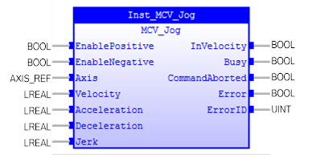
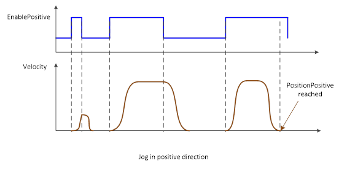

Commands a controlled Jog motion.

MCV_Jog commands a controlled Jog motion. The axis will start to move when ‘EnablePositive’ or ‘EnableNegative’ changes to TRUE and will stop when one of them changes to FALSE. If ‘EnablePositive’ and ‘EnableNegative’ change to TRUE at the same time, ‘Error’ will be TRUE.
MCV_Jog works in 'Standstill' state. Axis’ PLCopen state will change to ‘Continuous Motion’ when MCV_Jog is executed.
MCV_Jog supports only one side motion. The axis will stop if both of ‘EnablePositive’ and ‘EnableNegative’ are set to TRUE. In this case, inputs of ‘Enable Positive’ and ‘EnableNegative’ are ignored until both are FALSE.
The following timing diagram shows the motion of Jog.

Make sure the input and output parameters are of data type indicated in the table below.
It is recommended that one MCV_Jog controls one axis.
|
Name |
Data Type |
Description |
|
INPUTS |
||
|
EnablePositive |
BOOL |
Enable positive movement |
|
EnableNegative |
BOOL |
Enable negative movement |
|
Axis |
AXIS_REF |
Reference to the axis |
|
Velocity |
LREAL |
Value of the maximum velocity (not necessarily reached) |
|
Acceleration |
LREAL |
Value of the acceleration |
|
Deceleration |
LREAL |
Value of the deceleration |
|
Jerk |
LREAL |
Value of the jerk |
|
OUTPUTS |
||
|
InVelocity |
BOOL |
Velocity is reached |
|
Busy |
BOOL |
Indicates that the FB has control on the axis |
|
CommandAborted |
BOOL |
'Command' is aborted by another command |
|
Error |
BOOL |
Signals that an error has occurred within the FB |
|
ErrorID |
UINT |
Error identification |